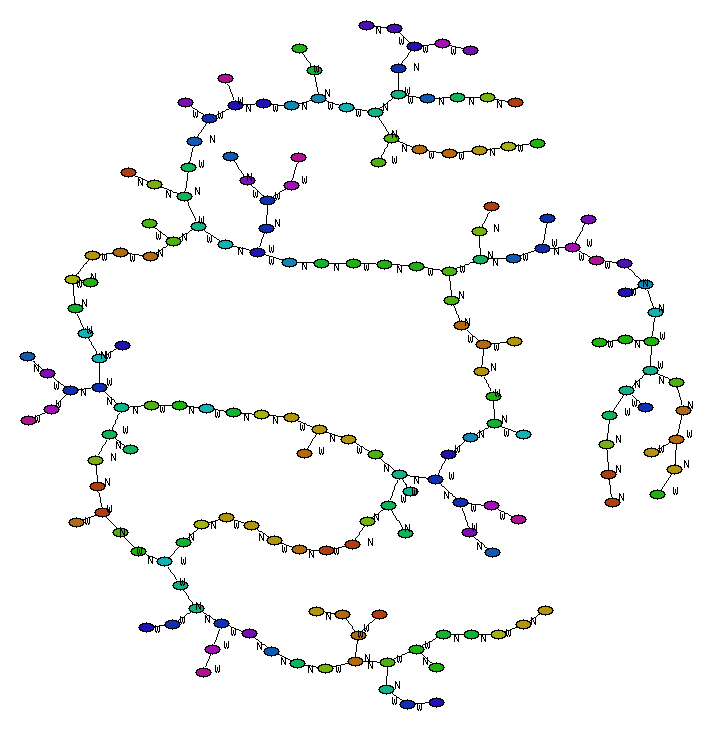

Orimazes are also block moving puzzles in disguise. Like the famous 15 puzzle, there are pieces to move around with only one free slot to spare. But instead of being numbered, there are now just 2 kinds of pieces, horizontal and vertical, each movable in one direction only. So the number of vertical pieces in a column stays the same, and likewise for the number of horizontal pieces in a row. The goal is to get a horizontal piece to the top left.
In my paper Limits of Rush Hour Logic Complexity I explore the complexity of these puzzles.
Here's a diagram of all positions in a 4x5 puzzle. .
Play it now in JavaScript. Or the harder 5x5 one. Download a ruby program to play orimazes.